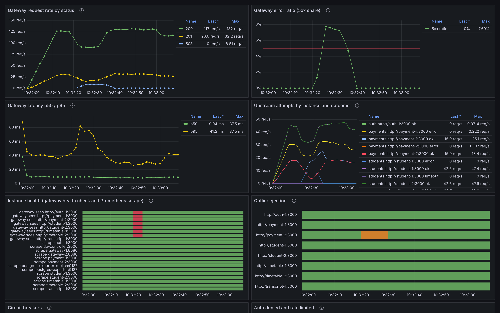

Final project report · Fault Tolerance and Dependable Computing
Aibyn Talgatov (CSE-2505M)
Repository: https://github.com/a169n/final_fault (full report: reports/final/REPORT.md)
| 13 / 13 | scenarios passed by the final configuration in all 3 repetitions, against 1 / 13 for the baseline |
| 6.8 s | until payments resume after the database primary is stopped, with no operator; 0 acknowledged payments lost in 9 failovers |
| 99.76 % | availability over a ten-minute soak with nine component faults, against 85.30 % (baseline, one run) |
| 77 % | of destroyed payment records restored from backup in about 2 s; the baseline lost all of them |
The project continues the university information system of the midterm and endterm (students, payments, transcripts, timetables). The endterm left two gaps: the database primary was a single point of failure for every payment, and nothing protected the data itself. The final closes both, states measurable objectives first, and computes reliability figures from the experiments.
One codebase, two configurations. Every container runs the same image. The baseline has the same replicas and standby but nothing uses them; final switches every mechanism on. Topology, workload, fault injection and monitoring are identical, so a measured difference is caused by the mechanisms.
| Tier | Components (new in the final marked *) |
|---|---|
| Entry | nginx on :8080, failover between two gateways |
| Gateways | gateway ×2: JWT check, policy, rate limit, retry, timeout, breaker, ejection, stale cache |
| Services | auth, student ×2, payment ×2, timetable ×2, transcript |
| Data | PostgreSQL ×2 with synchronous* streaming replication; db-controller* (promote, fence); db-backup* (verified dump every 15 s) |
| Monitoring | Prometheus with 11 alert rules (5 new*), Grafana, one exporter per database node* |
19 containers on one Docker host. Critical workflow: client → nginx → gateway → payment → database → standby.
| # | Objective (target) | Final, measured | Met |
|---|---|---|---|
| SLO-1 | Availability under one fault ≥ 99.5 % | 100 % in five scenarios, 99.76 % in the soak; 98.81 % (E2) and 97.95 % (E5) | partly |
| SLO-2 | Payments resume ≤ 10 s without an operator | 6.8 s (E2), 5.9 s (E5) | yes |
| SLO-3 | p95 latency ≤ 1 s, also at 11× load | 40–48 ms; 680 ms at 110 clients | yes |
| SLO-4 | 0 duplicate charges, 0 acknowledged payments lost | 0 / 0 in 36 runs with a component fault | yes |
| SLO-5 | Destroyed data: loss window ≤ 20 s, restore ≤ 60 s | 3.8–13.7 s; 2.0–2.5 s | yes |
| SLO-6 | Alert ≤ 10 s (down), ≤ 15 s (errors), ≤ 20 s (records lost) | 5–8 s; 12 s; 5–6 s | yes |
| SLO-7 | 100 % of unauthorized requests denied and audited | 189 of 189 | yes |
| SLO-8 | A standby streams again after the repair | 12 of 12 runs | yes |
Assumptions. Crash, omission and timing faults and one destructive operator statement; no Byzantine faults; one fault per redundancy group; one Docker host; clean database stops; synthetic data.
Terminology (Avižienis et al.): a fault is the cause (a killed container), an error the deviating state (a payment row left pending), a failure the deviation seen at the interface (a 5xx, a lost payment). Each scenario injects a fault; the event log shows the errors; the client log shows whether a failure occurred.
| Failure mode | Baseline effect | Tolerance in final | Final effect |
|---|---|---|---|
| Replica or node crashes | its share of requests fails until repaired | health check, retry, restart policy | none |
| Gateway dies | total outage | nginx fails over to the second gateway | none |
| Replica slow (3 s) | throughput collapses | timeout, retry, outlier ejection | 9 % throughput |
| Payment crashes mid-way | pending forever; re-send charged twice | idempotency key, checkpoint, rollback | retry is safe |
| Database primary stops | every database request fails or hangs | promotion, writer discovery, synchronous replication | 6–7 s without payments |
| Records destroyed | permanent loss | verified backups, merge restore | ≤ 15 s of payments lost |
| Forged or missing token | accepted | authentication, authorization, audit | denied, audited |
| nginx or host down | total outage | none | total outage |
Threat model (STRIDE over five trust boundaries, 21 accepted residual risks; THREAT-MODEL.md). New in the final: the controller's database role can promote and fence but cannot read a table; the backup role is read-only; a backup is merged only after its checksum, a trial restore and a ledger check pass.
Definitions. A failed second has fewer than 99 % successful requests; a failure is a run of failed seconds; D is their number; T the observation window.
MTTR = D / failures
MTTF = (T − D) / failures
MTBF = T / failures = MTTF + MTTR
A = MTTF / (MTTF + MTTR)
λ = failures / (T − D)
Worked example (soak, final, 3 runs): T = 1 800 s, 6 failures, D = 46 s. MTTR = 46/6 = 7.7 s; MTTF = 1 754/6 = 292.3 s; MTBF = 300.0 s; A = 97.44 %; λ = 12.3 per hour.
| Soak (9 faults / 600 s) | baseline | final |
|---|---|---|
| Faults that became failures | 8 of 9 | 6 of 27 |
| Fault coverage | 11.1 % | 77.8 % |
| MTTR | 18.5 s | 7.7 s |
| MTTF | 21.8 s | 292.3 s |
| MTBF | 40.3 s | 300.0 s |
| A (failed seconds) | 54.20 % | 97.44 % |
| A (requests) | 85.30 % | 99.76 % |
The fault rate is injected, not observed: MTTF and λ describe the system under this fault load. What transfers is MTTR, coverage and the ratio between configurations. For fully masked scenarios no failure was seen in 210 s, so only a bound holds: λ ≤ 51 per hour at 95 % confidence (rule of three). A series/parallel model with an illustrative component MTTF of 30 days gives 29.9 against 3.1 minutes of downtime a year; almost all of the remainder comes from nginx and the single transcript service.
Service replicas with load balancing; database replication with standby reads; restart policy; storage checksums; independent monitoring; redundant gateways; liveness/readiness split.
Automatic database failover (new). A controller probes both nodes every second. After 3 probes without a writer it promotes the standby, but only one that was in sync. A returning stale primary is fenced and rebuilds itself as a standby. Replication is synchronous while a standby streams.
Verified backups and merge restore (new). A dump every 15 s, checked and checksummed, 20 kept. The restore loads it into a scratch database, checks the ledger, then inserts only missing payments and recomputes balances.
Retry with exponential backoff and jitter (3 attempts); timeouts (0.8 s per attempt); circuit breaker (5 failures, 5 s); health checks (1 s); idempotency keys with a unique constraint; checkpoint and rollback; graceful degradation (stale reads, HTTP 203); fail-fast writes; job checkpoints; outlier ejection.
Writer discovery (new). Each service asks both nodes for their role twice a second and writes to the one on the highest timeline. A promotion starts a new timeline, so a stale primary loses everywhere without coordination.
Nested timeouts (new). Database wait 0.5 s < gateway attempt 0.8 s < nginx 5 s < client 10 s.
Logs. One JSON line per event with service, mode, kind, level and request ID; the ID crosses every hop and cannot inject log lines. Metrics (scraped every 2 s): requests and latency per route, upstream attempts, breaker and ejection state, denials, stuck payments, and new: who accepts writes, streaming standbys, failovers, backup age, completed-payment count. Alerts: 11 rules with promtool unit tests; in final all expected alerts fired and no unexpected one in 39 of 39 runs.
| Control | How it works | Proof |
|---|---|---|
| Authentication, authorization | scrypt passwords, 15-minute HS256 JWTs, role × route matrix, fail closed | unit tests; E9 |
| Validation, rate limiting | closed models, body ≤ 16 KiB, token buckets → 429 | unit tests; E10 |
| Audit, least privilege | audit line per deny and payment; database roles without DELETE; controller role without table access | integration tests |
Each run restores a known state, applies a closed-loop workload of 10 clients (60 % reads, 20 % transcripts, 20 % payments, 20 % of payments re-sent), injects the fault at +20 s and repairs it at +45 s. Hypotheses and pass/fail criteria were committed before the results and are the same for both configurations. Test levels: 424 Python unit tests, 104 harness tests, 32 alert-rule cases, 22 integration tests (19 pass, 3 fail, see §9), 13 system scenarios.
| Code | Scenario | baseline | final | A base | A final | Dup. base | Dup. final |
|---|---|---|---|---|---|---|---|
| E1 | Service process crashes | FAIL 0/2 | PASS 3/3 | 92.04 % | 100 % | 658 | 0 |
| E2 | Database primary stopped | FAIL 0/2 | PASS 3/3 | 99.29 % † | 98.81 % | 439 | 0 |
| E3 | One replica becomes slow | FAIL 0/2 | PASS 3/3 | 100 % † | 100 % | 543 | 0 |
| E4 | A whole node dies | FAIL 0/2 | PASS 3/3 | 83.37 % | 100 % | 452 | 0 |
| E5 | Payment interrupted mid-way | FAIL 0/1 | PASS 3/3 | 92.37 % | 97.95 % | 222 | 0 |
| E6 | Load spike (110 clients) | PASS 1/1 | PASS 3/3 | 100 % | 100 % | 463 | 0 |
| E7 | One gateway dies | FAIL 0/1 | PASS 3/3 | 61.69 % | 100 % | 217 | 0 |
| E8 | Error spike (alert test) | FAIL 0/1 | PASS 3/3 | 69.12 % | 90.38 % | 271 | 0 |
| E9 | Unauthorized access | FAIL 0/1 | PASS 3/3 | 100 % | 100 % | 386 | 0 |
| E10 | Abuse and malformed input | FAIL 0/1 | PASS 3/3 | 100 % | 100 % | 403 | 0 |
| E11 | Records destroyed, restore | FAIL 0/1 | PASS 3/3 | 100 % | 100 % | 497 | 1 ‡ |
| E12 | Soak: nine faults | FAIL 0/1 | PASS 3/3 | 85.30 % | 99.76 % | 2 076 | 0 |
| E13 | Database standby stopped | FAIL 0/1 | PASS 3/3 | 99.99 % | 100 % | 376 | 0 |
| Scenarios passed | 1 / 13 | 13 / 13 |
"k/n" = repetitions in which every criterion passed. A = successful requests / all requests, mean. † flattered by hanging clients (§9). ‡ two acknowledgements for one payment whose record was destroyed between them; one row in the database. The baseline campaign was stopped by the deadline after 17 runs, so its values come from one or two runs.
Request availability (axis starts at 60 %). Replica, node and gateway failures are masked completely; an interrupted payment (E5) still costs about 6 s of payments because the fault hits both payment replicas.
| Measure | baseline | final |
|---|---|---|
| E2: payments succeed again after the fault | 20.5 s, after the operator's repair | 6.8 s ± 0.6 s, primary still down |
| E2: successful requests per second during the fault | 1.4–1.8 | 125–133 |
| E3: throughput kept during the fault | 7 % | 91 % |
| E9: attacks denied, of 63 per run | 0; 41 attacker payments stored | 63; none stored |
| E11: acknowledged payments missing after the repair | all 1 115 | 118–383 of about 1 140 |
| E11: loss window / restore time | 39.9 s / no backup | 3.8–13.7 s / 2.0–2.5 s |
| E12: seconds with < 99 % success, of 600 | 240 | 14–16 |
| Acknowledged payments lost in 9 automatic failovers | – | 0 |

The primary stops at 10:32:20. Payments fail (503) while reads continue; the 5xx share peaks at 7.7 %. After three failed probes the controller promotes the standby; services find the new writer and the payment breaker closes. DatabaseDown fires after 8 s; DatabaseNoWriter never leaves pending because the promotion is faster.
SLO-1 missed in E2 and E5. When one fault removes all capacity for payments, the system bounds the outage (6–7 s) and cannot mask it.
E2 availability: the baseline scores higher (99.29 % against 98.81 %) only because its clients hang and stop sending; it served 1.4–1.8 requests per second during the fault against 125–133.
E13 hypothesis refuted: stopping the standby was expected to stall payments for 2–4 s; no request failed, the slowest took 1.3–1.8 s.
Mechanisms interact: promotion takes about 4 s, but the payment breaker stays open 5 s, so payments resume after 6.8 s.
Baseline: one or two repetitions, stopped by the deadline. An alert rule (BackupStale) misfires in the baseline, so its alert results are unusable.
Three of 22 integration tests fail against the final stack, undiagnosed.
One host; three repetitions; closed-loop workload; clean database stops only.
One controller with one vantage point; backups on the same host; nginx and the host remain single points of failure.
One run was contaminated by the experimenter and repeated (EXPERIMENT-LOG.md).
Restoring "the latest" backup restored nothing: it was taken after the damage. Restore from before the incident.
Replication does not protect data from a wrong statement; only a backup does.
Measure availability more than one way; request counts hide a system that hangs.
A hypothesis that fails (E13) is as informative as one that holds.
Fix the alert rule and complete the baseline; diagnose the failing tests; reset the breaker on a writer change; WAL archiving; a quorum-based failover manager; a second nginx and host.
The final configuration met seven of eight objectives and passed all 13 scenarios in every repetition; the baseline passed one. The database primary is no longer a single point of failure for payments, no acknowledged payment was lost in nine failovers, and destroyed records are recoverable to the last backup. The weak points are reported with the data that shows them.
References: final assignment (docs/requirements/); Avižienis et al., "Basic Concepts and Taxonomy of Dependable and Secure Computing", IEEE TDSC 2004; Nygard, Release It!, 2018; Beyer et al., Site Reliability Engineering, 2016; Shostack, Threat Modeling, 2014; Kleppmann, Designing Data-Intensive Applications, 2017; Trivedi, Probability and Statistics with Reliability, Queuing, and Computer Science Applications, 2002; Schroeder et al., "Open Versus Closed", NSDI 2006; PostgreSQL 16, nginx and Prometheus documentation.
Aibyn Talgatov defined the scope of the final project from the assignment, directed the work, set the format of this report and manages the repository. The implementation, the experiment campaign and the drafting of the report were produced with an AI coding assistant (Claude Code) under that direction; changes were checked by automated tests. The system extends the team's midterm project.